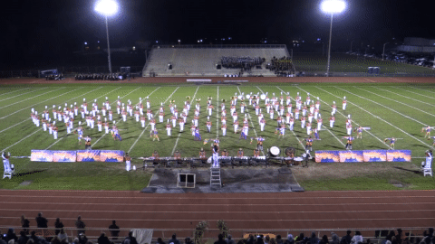
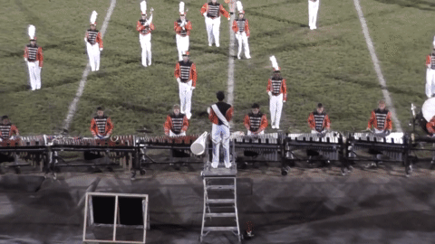

One extracurricular activity I participated in during High school was Marching Band. A key part of Marching Band is the "The Field Show". Essentially, The Field Show involves
the band members performing a set of songs while simultaneously forming interesting formations and patterns. The Show usually involves a central theme
or idea, and through the Field Show, the band tries to convey a story to the audience. The Show was basically the main performance that the marching band worked towards,
and the component that took up much of our time and practice.
To make the show more interesting, I along with a team of friends built a set of remote controlled lights that added a "light show" element to the performance.
I was in charge of designing and fabricating the electronics and laying out the circuits, while the other team members programmed the patterns, and worked on other
aspects of the project. After about a week of work, we were finally able to use it in our performance at our first Marching Band competition. At the competition,
we were relieved to see that our creation worked and even recieved compliments from the judges! Through this project, I was able to practice my electronics and engineering schools
in a real world application.
Video of the Lights on Drums:
Here are some gifs of the project in action:


Full Vide of performance: